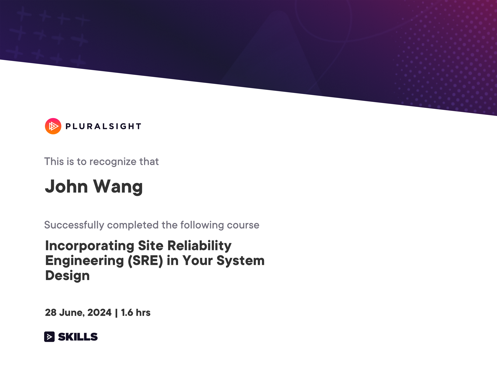
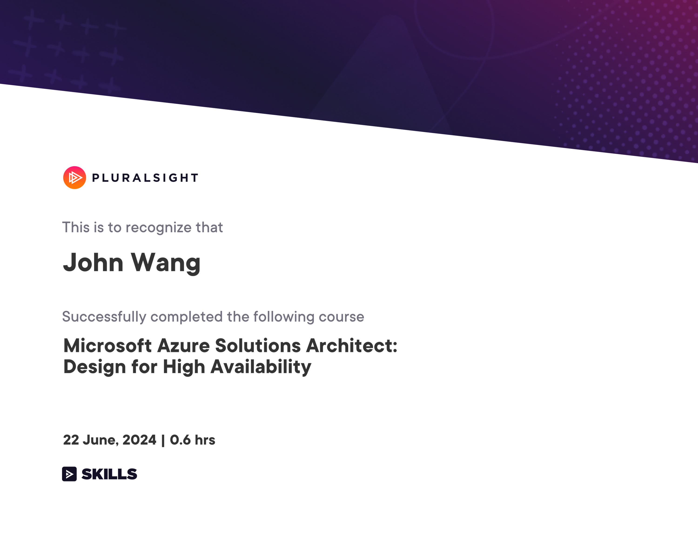
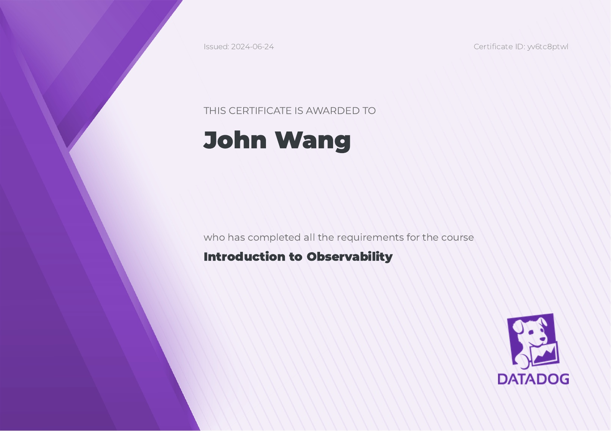

John's Observability Certificates
Site Reliability Enginering (SRE) (2)
Incorporating Site Reliability Engineering (SRE) in Your System Design from Pluralsight by Elton Stoneman

Microsoft Azure Solutions Architect: Design for High Availability from Pluralsight by Barry Luijbregts

Datadog (2)
Introduction to Observability from Datadog
